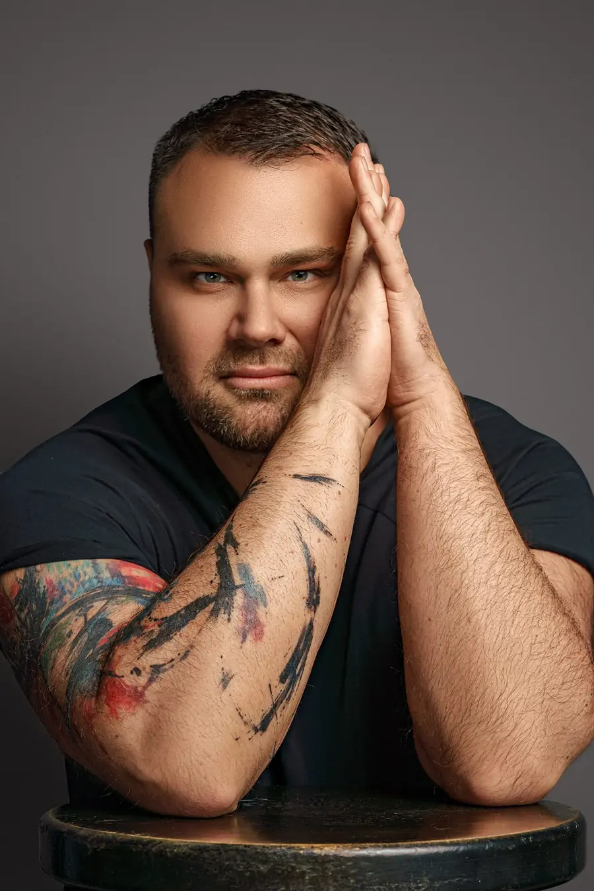
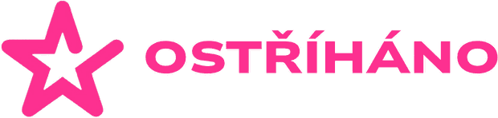
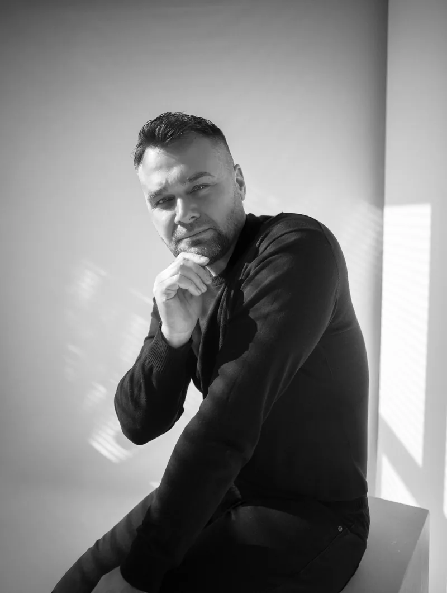
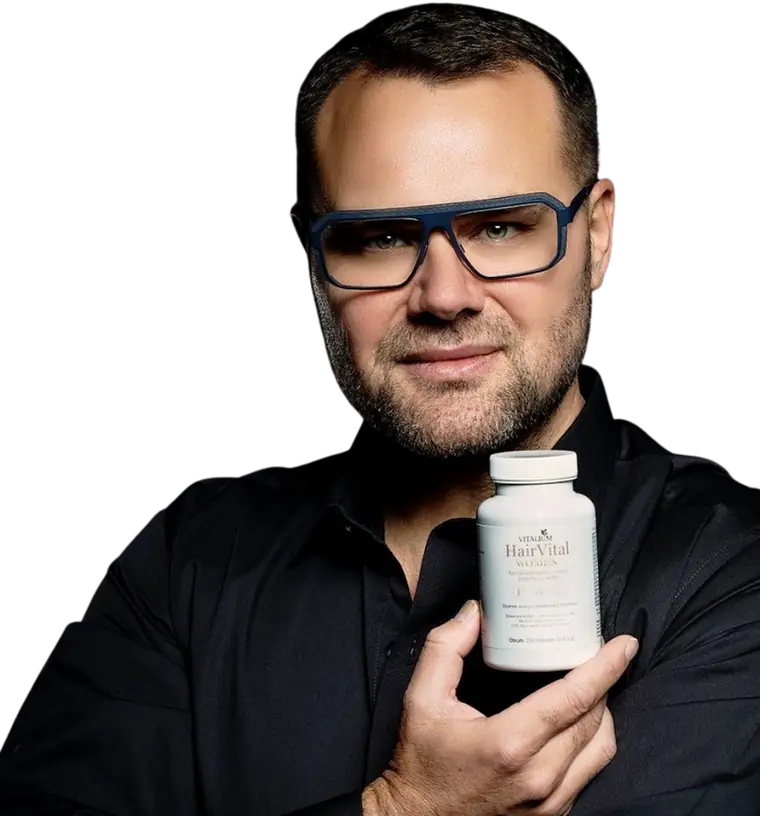
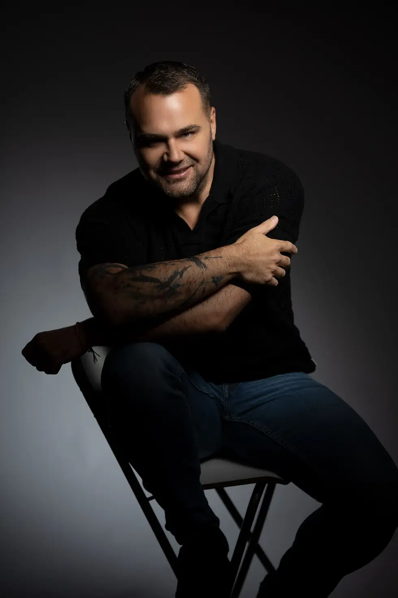
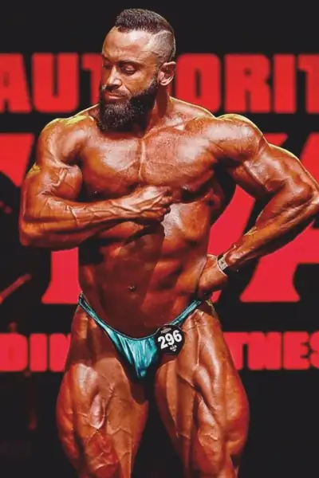
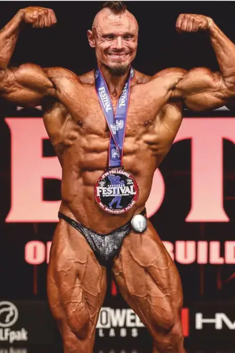
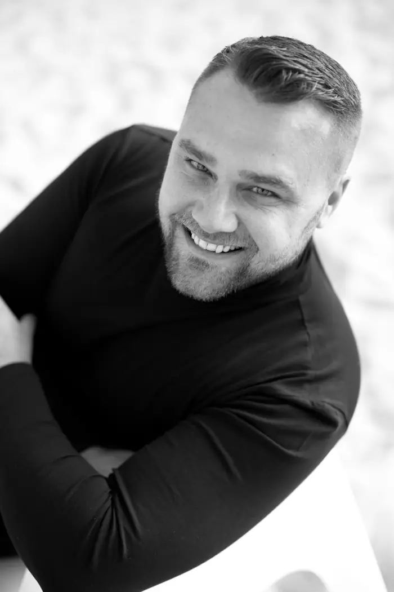
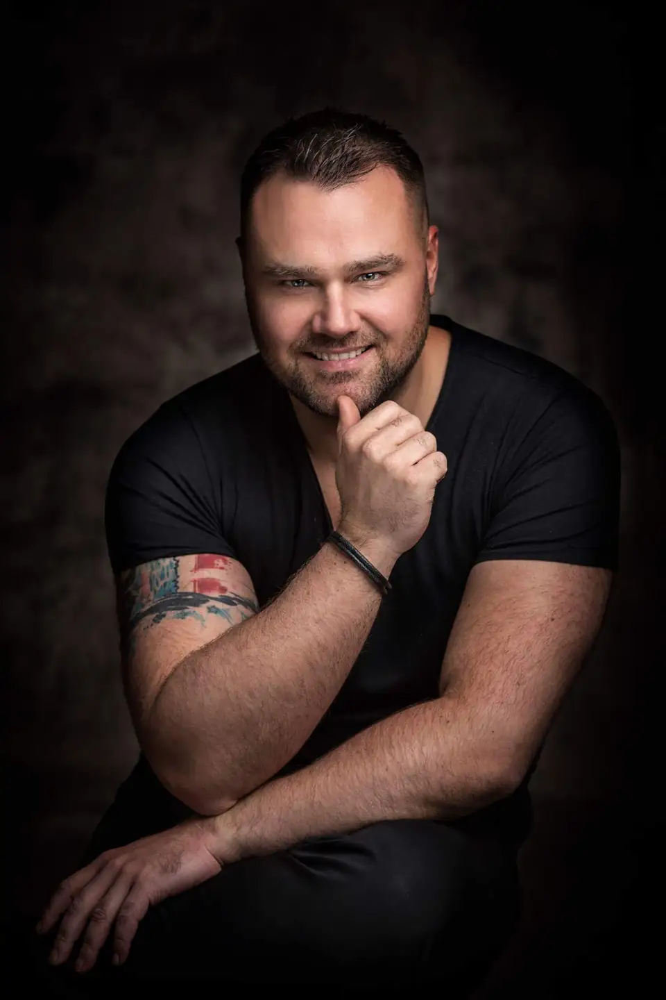

Pavel Filandr
Od roku 2001Kadeřník, vizážista, stylista, technolog, edukátor a podnikatel.

New FlagProfil

Pavel Filandr je uznávaný odborník v oblasti kadeřnictví, stylingu, vizáže a profesionální péče o krásu.
Původní studia ho sice nasměrovala do hotelnictví, jeho skutečnou profesí se ale stal svět krásy. Během více než pětadvaceti let praxe se vypracoval mezi špičky svého oboru v Česku. Vedle práce kadeřníka a vizážisty se postupně stal také vyhledávaným technologem, odborným lektorem a školitelem, jehož zkušeností využívají profesionálové doma i v zahraničí. Po složení zkoušek znaleckého minima na Univerzitě Karlově je navíc jako jeden z mála kadeřníků v České republice soudním znalcem v oboru kadeřnictví.
Jeho působení dnes výrazně přesahuje samotný svět krásy. Dlouholeté zkušenosti z beauty segmentu propojuje se vzděláváním, zdravým životním stylem, vývojem produktů i společensky prospěšnými projekty na pomoc těm, kdo ji potřebují nejvíce.
Projekty
Doplňky, kterým věří sám

Proč Vitalium
Značku Vitalium založil z osobního přesvědčení, že i v České republice lze vytvořit doplněk stravy, který bude stát na kvalitě, funkčnosti a skutečných výsledcích. Právě produkt HairVital Women se stal důkazem této myšlenky.
- Kvalita
- Funkčnost
- Skutečné výsledky
HairVital Women
Svým složením a hlavně účinkem si postupně získal důvěru profesionálních kadeřníků, kteří dokážou výsledky posoudit odborným okem, a především samotných klientek. HairVital Women tak dokázal, že i český produkt obstojí v náročné profesionální konkurenci a přesvědčí kvalitou i zkušenostmi zákaznic.

Atelier
Pavla Filandra
Pavel Filandr provozuje privátní kadeřnický ateliér v Praze.
Objednání probíhá po předchozí domluvě a individuální konzultaci. Každá návštěva tak dostane maximum péče, klidu a osobního přístupu.
Ateliér se zaměřuje na komplexní proměny, precizní střih, odbornou péči o vlasy a individuální styling s důrazem na celkový vzhled a osobnost klienta.
Od roku 2001 se značka Filandr specializuje na výrobu závodních pózovacích plavek pro kulturistiku a fitness, pro ženy i muže.
Každý model vzniká s důrazem na perfektní střih, proporce postavy, detail a maximální efekt na soutěžním pódiu. Díky pětadvacetiletým zkušenostem patří značka Filandr ke špičce evropského trhu se závodními plavkami a obléká amatérské i profesionální závodníky.


Odborný technolog
a edukátor
V oblasti profesionální vlasové kosmetiky působí Pavel Filandr jako technolog a odborný edukátor již více než deset let.
-
3roky
SP Venture
První tři roky získával zkušenosti ve společnosti SP Venture, kde pracoval se značkami LABEL.M, Inebrya, Jean Paul Mynè a řadou dalších profesionálních kadeřnických značek.
-
7let · hlavní technolog
New Flag
Následujících sedm let působil jako hlavní technolog společnosti New Flag, kde měl možnost pracovat s významnými světovými značkami, jako jsou OLAPLEX, O&M (Original & Mineral), Maria Nila, evo, Urban Alchemy a mnoho dalších.
Díky dlouholeté práci napříč značkami, technologiemi, barvicími systémy i řadami profesionální vlasové péče získal mimořádně široký přehled o vlasové kosmetice. Především ale dokáže objektivně porovnat kvalitu, složení, technologii i skutečnou účinnost jednotlivých produktů v každodenní salonní praxi.
Své zkušenosti dlouhodobě předává profesionálním kadeřníkům prostřednictvím odborných školení, seminářů a praktické edukace. Spojení mnohaleté práce za kadeřnickým křeslem s technologickými znalostmi mu umožňuje hodnotit produkty ne podle marketingových slibů, ale podle toho, jak skutečně fungují na vlasech v rukou profesionála.
Síla, klid a radost tam, kde chybí nejvíc

Přinášet sílu, klid a radost tam, kam dolehlo onkologické onemocnění.
Onkologické volnočasové centrum, z. s., veřejnosti známé jako ONKOLEHKO, přináší sílu, klid a radost dětem, dospělým i jejich rodinám, jejichž životy zasáhlo onkologické onemocnění.
Organizace navazuje na charitativní akce, které vznikaly ve spolupráci s dětskou onkologií Fakultní nemocnice v Motole. Pavel Filandr je hrdým pokračovatelem této iniciativy. Pro aktivity spolku poskytuje zázemí ve svém Resortu pod Landštejnem v České Kanadě, kde spolu s týmem a dobrovolníky organizuje rehabilitační, odpočinkové a podpůrné pobyty.
Projekty spolku
-
Pro děti
Nádech svobody
Týdenní letní tábor pro děti po onkologické léčbě v Resortu pod Landštejnem. Pod dohledem zkušených vedoucích a zdravotníka zažijí přírodu, nová přátelství a radost.
Více o táboře -
Pro rodiny
Znovu spolu
Ozdravné pobyty pro rodiny, které zasáhla rakovina. Společný čas v přírodě, klid a psychologická i terapeutická podpora, aby rodina znovu našla jeden druhého.
Více o pobytech -
Pro všechny
Společně pro naději
Charitativní běhy, benefiční koncerty, výstavy, workshopy i dražby. Výtěžek z akcí jde na podporu onkologických pacientů.
Více o akcích
Podpořte Onkolehko
Darem pomůžete uspořádat tábory, pobyty a akce pro děti a rodiny, kterým do života vstoupila rakovina. Přispět můžete přes QR kód na webu spolku nebo přímo na účet 7057039389/0800.
Média
a televize
- Drsný stylistaTV Harmonie · díly na YouTubeSledovat
- OstříhánoTV Barrandov
- PopelkaTV Barrandov
- Tipy a triky od kadeřníkaautorský pořad · Stream.czSledovat
Porotce celostátních soutěží krásy.

Rozhovor · A11 TV
Dobrý večer s A11
Pavel Filandr byl hostem večerního rozhovorového pořadu televize A11, vysílaného v červenci 2026.
Pustit na tv.a11.czCesta
-
01
Počátky a odborný růst
Odborné vzdělání, tuzemské i zahraniční rekvalifikace a stáže v kadeřnictví a vizážistice.
-
02
Rozvoj podnikání
Vlastní salon s početným týmem, později i zkušenosti z gastronomie.
-
03
Praha a média
Stabilní postavení na pražském trhu, otevření prestižního salonu, dlouholeté působení v televizních a internetových pořadech.
-
04
Zdraví a filantropie
Vstup do oblasti zdravého životního stylu se značkou Vitalium a zapojení vlastního Resortu pod Landštejnem do činnosti Onkolehka.
-
05
Technolog a edukátor
Deset let jako technolog a edukátor profesionální vlasové kosmetiky ve společnostech SP Venture a New Flag.
Ozvěte se
Pavel Filandr přijímá poptávky na spolupráci se značkami, mediální vystoupení, přednášky a školení pro profesionály.
Stejnou cestou se můžete objednat i do ateliéru. Napište, co potřebujete, a ozveme se co nejdřív.